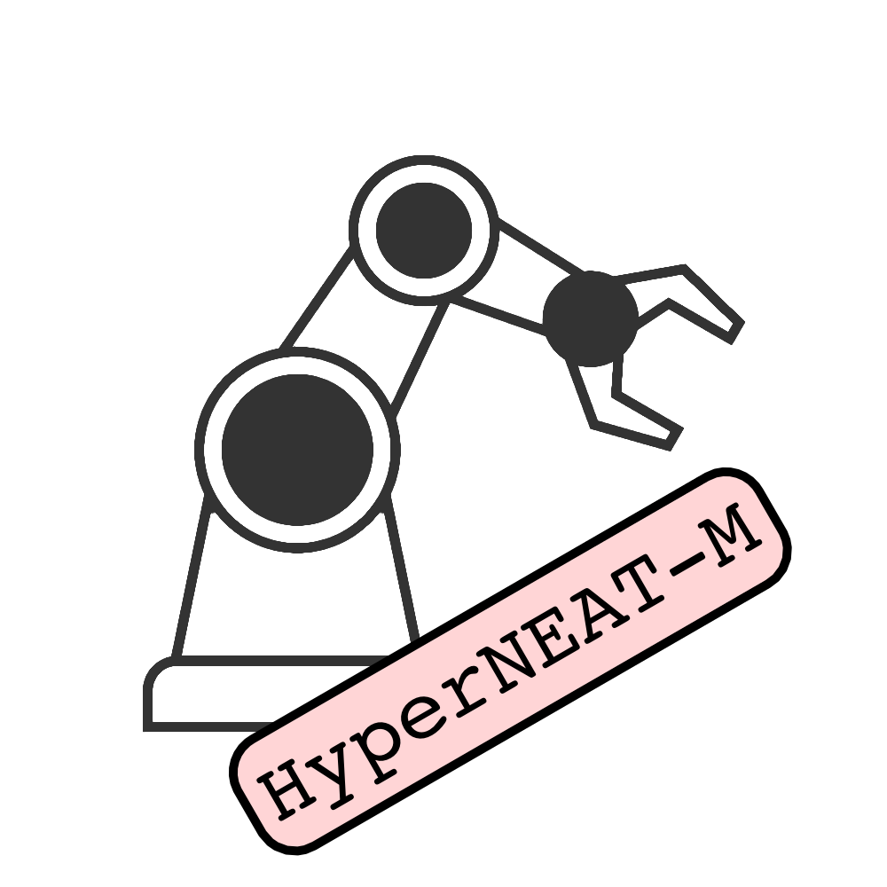

Overview
The field of Evolutionary Swarm Robotics seeks to simulate natural evolution in evolving robot morphologies (or bodies) and controllers (or brains) for collaborative task environments. This project aims to further investigate the relationship between robot complexity and task performance in a collective gathering task, while extending previously defined approaches to imposing an evolutionary cost on complexity.
Single-objective evolutionary algorithms (NEAT-M and HyperNEAT-M) were implemented, constrained by the energy cost associated with draining a simulated battery in proportion to some measure of robot complexity (morphological or neural). One of the goals of using this approach is to address criticism of previous work which embraced multi-objective methods considered less true to natural evolution. Results indicate that costs on complexity are associated with evolved robots exhibiting increasingly degraded task performance in more difficult environments. It is surmised that higher complexity is required for group coordination behaviour.
Sections
The project was divided into three separate investigations, each carried out by one of the team members. This involved the use of different single-objective evolutionary algorithms (NEAT-M or HyperNEAT-M) to evolve either morphological or neural complexity in multi-robot systems. A brief description of each section is provided below, with links to the relevant website pages.
Scott
Single-objective NEAT-M with a cost implemented based on the evolved number and type of sensors active on a robot body, which represents morphological complexity.
More InfoRyan
Single-objective HyperNEAT-M with a cost implemented based on the evolved number and type of sensors active on a robot body, which represents morphological complexity.
More InfoTristan

Single-objective NEAT-M with a cost implemented based on the number of nodes and connections in the connected digraph that represents the artificial neural network acting as the controller of a robot body.
More Info